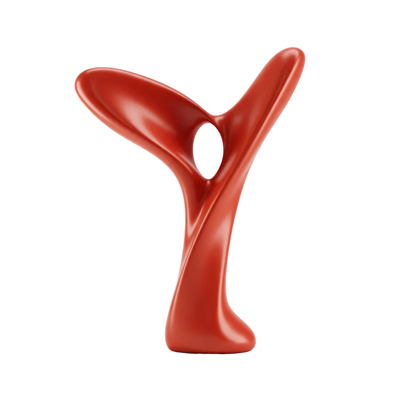
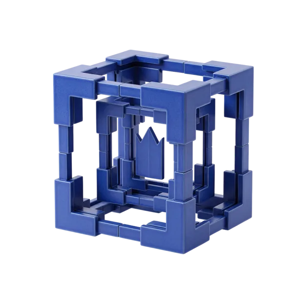
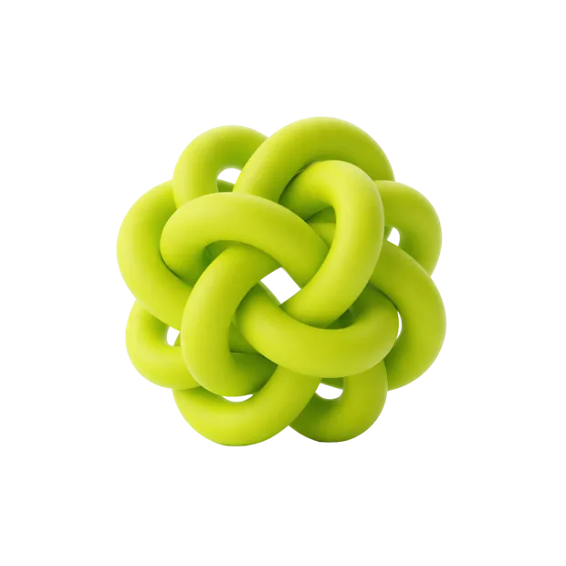
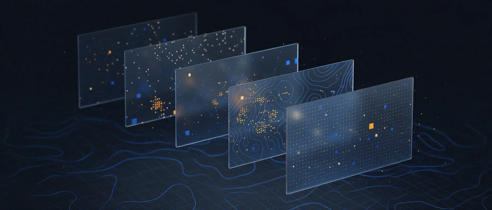
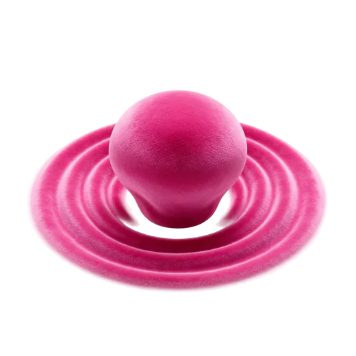
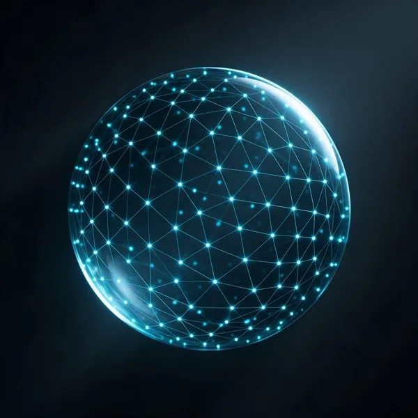

Informace, inteligence, čas rozhodnutíSuverenita a odolnost státu v éře umělé inteligence. Naše země se rozhoduje rychleji, než rozumí.
Technologie zkrátily čas na rozhodnutí, aniž by zkrátily čas potřebný k pochopení situace.
A právě do této mezery padají chyby, které si dnes už nemůžeme dovolit. Konference vychází z předpokladu, že limitem není dostupnost technologie, ale absorpční kapacita institucí a lidí, kteří s ní mají rozhodovat.
Cestou k lepším rozhodnutím jsou sdílené znalostní vrstvy. Ne další systém a ne další report, ale společný kontext, do kterého vidí všichni zúčastnění — s různými prioritami, kompetencemi, odpovědnostmi i mindsety. Na konkrétních situacích, mimo jiné na přípravě Host Nation Support, chceme ukázat, že bez sdíleného obrazu situace nelze spor o suverenitu a odolnost vést vědomě, natož jej rozhodnout včas.
Na této vrstvě chceme iniciovat metodiku tvorby AI agentů a koučů, kteří rozhodovací proces moderují: směřují pozornost ke klíčovým tématům, nastolují otázky, které nikdo nechce položit, a odpovídají na otázky související, ale podružné, aby lidé měli kapacitu na ty hlavní. Agenti patří tam, kde posilují kritickou infrastrukturu i kritické myšlení — nikoli tam, kde je nahrazují.
Z toho plyne otázka, kterou konference považuje za nejdůležitější: co je dnes vlastně inteligence. Stroj obstará kapacitu, rychlost, paměť i absorpci. Neobstará formulaci otázky a hodnotový rámec, ve kterém dává odpověď smysl.
Suverenita rozšiřuje prostor volby, odolnost chrání dosažené. Většina reálných sporů mezi resorty, dodavateli a partnery je ve skutečnosti sporem o směnný kurz mezi nimi — jen se tak nepojmenovává. Rozlišení mezi nimi není akademické, ale provozní.

Suverenita Kde závislost dává jiným právo vetaSchopnost jednat bez cizího svolení, formulovat si vlastní zadání a určovat vlastní tempo. Suverénní musíme být přesně tam, kde by závislost znamenala, že o našem rozhodnutí rozhoduje někdo jiný.
Vlastní obraz reality v datech o nás samých — ne obraz, který nám o nás zprostředkuje někdo jiný.
Kryptografický kořen důvěry — identita, podpisy a ověřování pod vlastní kontrolou.
Schopnost ověřit cizí model dřív, než mu svěříme rozhodnutí o člověku.
Právo určit hranici mezi strojem a člověkem — kde končí automatizace a začíná úsudek.
Kontrola nad tempem adopce — nasazovat podle vlastní připravenosti, ne podle cizího release plánu.
Právo odejít od dodavatele bez ztráty funkce.
Suverenita je drahá, a proto se musí přidělovat. Kdo ji chce mít ve všem, nemá ji nikde.

Odolnost Kde je závislost přijatelná, ale výpadek nesmí kaskádovatSchopnost vydržet šok, degradovat řízeně místo kolapsu a vyjít z krize poučeni, ne jen obnoveni. Odolnost je štít chránící suverenitu — suverenita státu bez základní odolnosti je jen iluze.
Výpočetní kapacita — dostupná i ve chvíli, kdy je jí globálně nedostatek.
Špičkové modely — přístup, který nezmizí s jedním obchodním rozhodnutím.
Energie — bez ní nejsou data, bez dat není obraz situace.
Konektivita — propojení, které vydrží degradaci i cílený útok.
Fyzické řetězce — dodávky, logistika, Host Nation Support.
Institucionální paměť — znalost, která neodejde s člověkem ani se změnou vlády.
Suverénní musíme být přesně v tom, co stroj neumí — a odolní ve všem, co umí lépe než my.

Ne další systém a ne další report. Společný kontext, do kterého vidí všichni zúčastnění — s různými prioritami, kompetencemi i odpovědnostmi. Bez něj nelze spor o suverenitu a odolnost vést vědomě, natož jej rozhodnout včas.
Dopoledne otevíráme rámec — kognitivní suverenitu státu a člověka v něm. Odpoledne jdeme do exekuce — strategická suverenita, technologie, obrana a kapacita státu jednat. Den uzavírá panel a networking.
Konference záměrně míchá světy, které se běžně nepotkávají: zpravodajskou komunitu, akademii, obranný průmysl, policii, regulátora a lidi, kteří AI systémy skutečně staví a nasazují. Barva karty ukazuje téma. Klikněte pro celý profil.
Dvě věci odlišují druhý ročník od běžné konference: podcast, který staví společný kontext ještě před akcí, a AI spolumoderátor, který během dne skládá mapu debaty v reálném čase.

Série, která před konferencí skládá sdílený obraz — a po ní ho dotáhne do výstupu. Moderují Jakub Bareš a Aleš Špidla.

Vedle dvou lidských moderátorů běží třetí, strojový: agent, který v průběhu dne skládá živou mapu debaty — kdo co řekl, kde se argumenty protínají, kde si odporují a která otázka zůstala nezodpovězená.
Není to efekt. Je to ukázka přesně té metodiky, kterou konference navrhuje: agent, který moderuje rozhodovací proces, směřuje pozornost ke klíčovým tématům a nastoluje otázky, které nikdo nechce položit.
Mapu debaty dostanou účastníci po konferenci jako podklad pro policy paper.
Druhý ročník je navržen jako pracovní formát. Výstupem není sborník, ale materiál, se kterým lze jít na jednání — a stanovisko, za kterým stojí odborná komunita.
Společný kontext k tématu suverenity a odolnosti, do kterého vidí všichni zúčastnění. Kdokoliv jde na důležité jednání, má odkud vyjít.
Materiál opřený o stanovisko AFCEA a o to, co na konferenci skutečně zaznělo — ne o dojmy z kuloárů.
Dohoda o dalším postupu mezi zúčastněnými stranami, sepsaná bezprostředně po konferenci, dokud je téma živé.
Problematika, která přesahuje jednotlivý resort, potřebuje adresáta nad resorty. Výstup míří na Radu vlády pro informační společnost.
Early Bird registrace skončila 31. července 2026. Aktuálně platí standardní vstupné. Členové AFCEA, pedagogové, studenti a absolventi CEVRO Univerzity mají zvýhodněnou cenu.
Registrace probíhá e-mailem přes sekretariát pracovní skupiny. Do zprávy uveďte jméno, organizaci, pozici a fakturační údaje; u zvýhodněné ceny členství v AFCEA nebo vztah k CEVRO Univerzitě.
V centru Prahy, pár minut od Můstku a Národní. Hostitelem druhého ročníku je opět CEVRO Univerzita — akademický partner konference a místo, kde první ročník v listopadu 2025 začal.
Pracovní skupina Intelligence (PS07), působící od roku 2018. Konference je akcí pracovní skupiny; na programu se podílí expertní tým kGovernment.
Místo konání obou ročníků. Partner v oblasti vzdělávání v kybernetické bezpečnosti a ochraně informací.
Hlavní partner druhého ročníku konference.
Technologie pro podporu rozhodování, analýzu informací a práci se znalostmi.